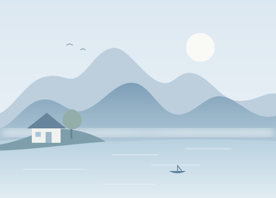

— 个开源作品macOS 应用 · 开发工具 · 一点好奇心
小而专注，保持开放。THE THINGS I'VE BUILT
01 /作品陈列室
有官网就去逛逛，喜欢的话也欢迎看看源码。
作品数据暂时未能加载，请刷新重试，或前往 GitHub 查看作品。
暂时没找到这个作品。
试试项目名称，或者 Swift、AI 这样的关键词。
试试项目名称，或者 Swift、AI 这样的关键词。
Sakura / THE MAKER
Plan to be a lovely person
开源作品，持续打磨。
使用反馈、问题或新点子，欢迎在对应项目的 Issues 里聊聊。